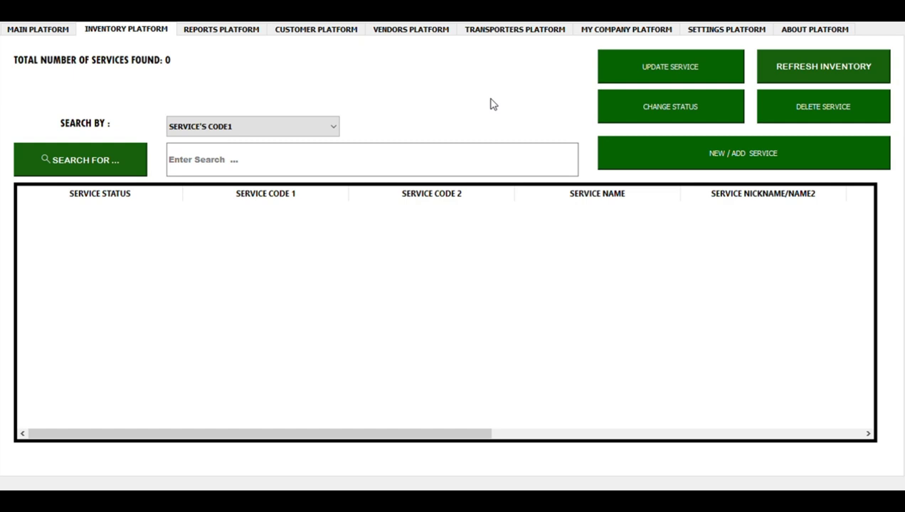
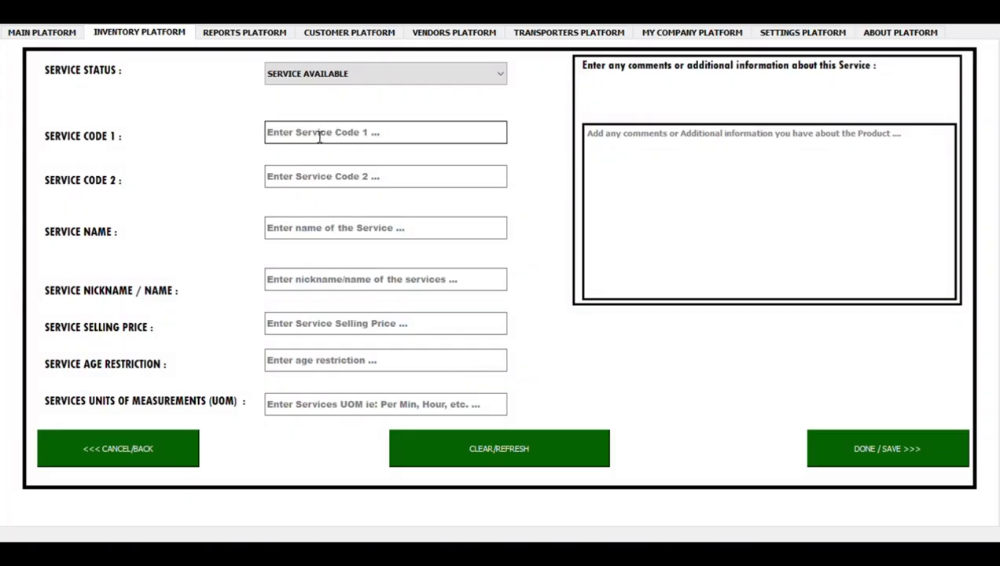
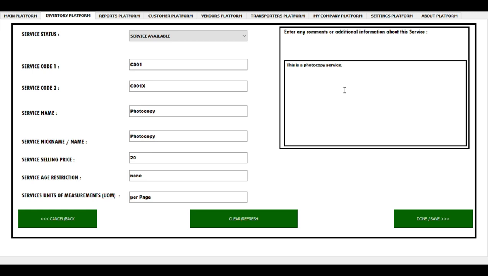
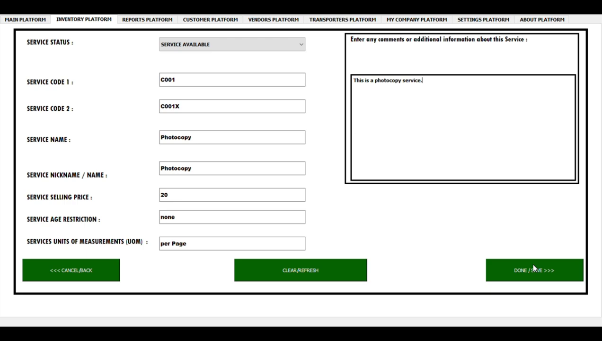
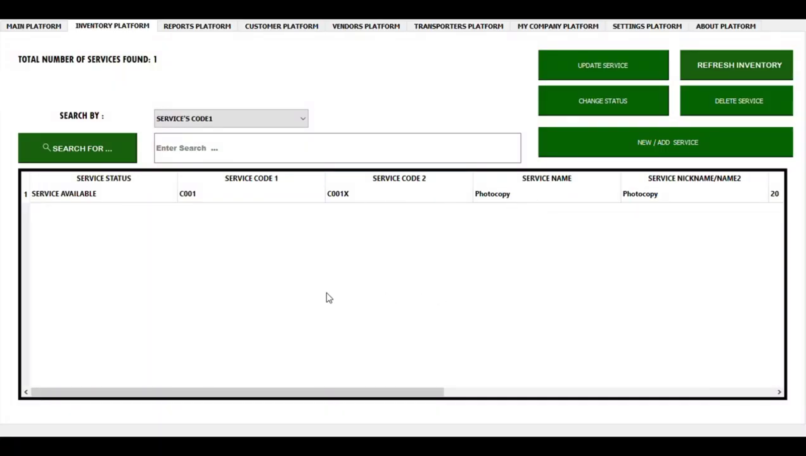

How hard is it to add or feed in your Services information to CODE76 SERVICES POS ?
As an Interested Entrepreneur or Business Owner, the answer is: EASY & QUICK .
The Best Part, its :
SIMPLE !!! FAST!!! PROFICIENT !!!
Don’t Believe me? I HAVE PROOF !!!
We just need to follow this Simple, Easy & Quick Steps. Follow along:
STEP 1: NAVIGATE TO THE INVENTORY PLATFORM OF CODE76 SERVICES POS.
STEP 2: FEEDING IN YOUR SERVICE INFO INTO CODE76 SERVICES POS.
STEP 3: CONFIRM YOUR SERVICE INFORMATION.
STEP 4: JUST REPEAT THE PROCESS TO ADD MORE SERVICES INFORMATION.
The Good News is :
Although here we are mostly focusing on Cyber Shop & Freelancing Services,
this process can be applied to any other service you want.
Now, Let Us Begin ...
STEP 1: NAVIGATE TO THE INVENTORY PLATFORM OF CODE76 SERVICES POS.
Move your Cursor to and Select the INVENTORY PLATFORM tab header.
The first page to you will see is the Inventory Display page.
On The Inventory Display Page, there are features such as: Blue Buttons, Display Table and Labels.
In this case, We are Just interested in that blue Button with the inscription ADD/NEW SERVICE.
You want to view the Inventory Entry Page.
Go ahead and Click on that Button.
Which will direct you to the Inventory Entry Page in the CODE76 SERVICES POS.

STEP 2: FEEDING IN YOUR SERVICE INFO INTO CODE76 SERVICES POS.
Now that the Inventory Entry Page is Displayed, we start typing our Service information.
Follow the entry box placeholders and labels as your guide.
Fill in the service information such as: service code/id, service name, service group name or name 2, age restriction, etc.
Confirm your Information, before saving your information.
Because you want to avoid making any Errors.
If everything is Good, Go ahead and Click on the green “Save” Button.
Which will save your service information and now direct you back to the Inventory Display Page in CODE76 SERVICES POS.
  
STEP 3: CONFIRM YOUR SERVICE INFORMATION.
Now redirected back to the Inventory Display Page, get to check if your current entered information appears in the inventory Display Table in CODE76 SERVICES POS .
If it hasn’t appeared yet, please click on the “REFRESH INVENTORY” Blue Button on the top right.
As a result, your services data will be secured, refreshed and will appear on the display table.
Notice also there is a Label on the top Left corner that indicates the number of services that are currently existing in the Inventory Database or Inventory Display Table.
You want to Confirm if you did input your Service information correctly in CODE76 SERVICES POS.
If the information was not added correctly, then you can either Delete the Current information and start the entry process a fresh again or simply Update it.
How to Delete any service information on the inventory, I share in another video.
How to Update any service information on the inventory, I also share in another video.

STEP 4: JUST REPEAT THE PROCESS TO ADD MORE SERVICES INFORMATION.
Just repeat step 1, 2 & 3 to continue adding more of your services information. Again, if you made a mistake on the information and its already in the Inventory Database, Don’t Panic – you have 2 options: delete the information and start the process again or just simply Update the information. Updating the information is Actually the Best Method you might like for correcting your Errors. If you have any questions or comments about the entire process or just CODE76 SERVICES POS, please use the contact information or website link below to get the customer support info. Also in the “ABOUT PLATFORM” of the Application you will find customer support info . You can also use the contact information below or website link below if you want to Buy CODE76 SERVICES POS. TAKE ACTION NOW & TRY IT YOURSELF !!!
Now Tell Us Which Step Was Hard or the Easiest For You ?
What Do You Think ? Any Thoughts ?
Did you like this article and you want more of this ?
Please, Comment in the Contact Page or Email Us.
Remember to Subscribe To Our Youtube Channel and Newsletter.
Also Check our Social Media and Be Active.
Thank You For Reading, & Continue Enjoying Reading Our Other Articles.